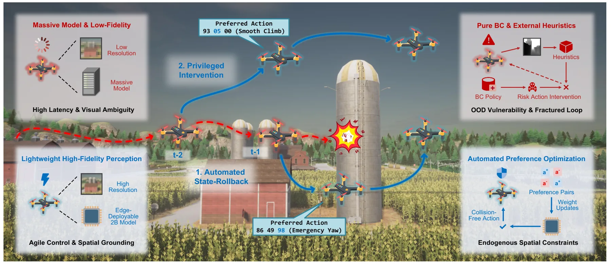
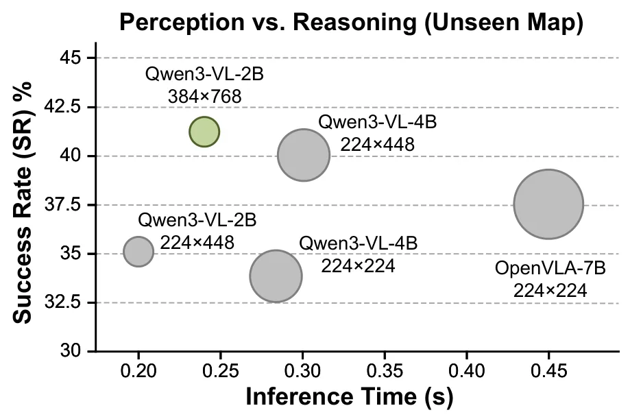
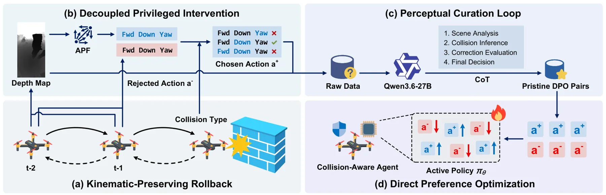
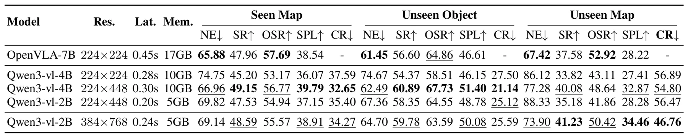
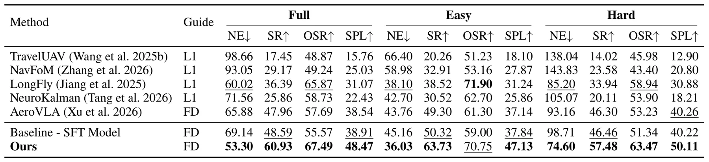
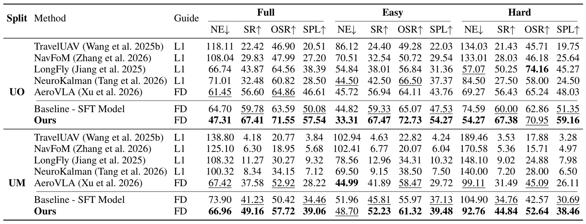
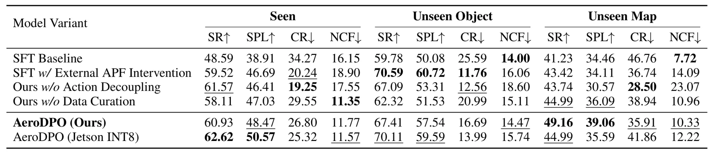

AeroDPO：以高保真感知与自动偏好优化实现轻量 UAV 导航AeroDPO: Unleashing Lightweight UAV Navigation with High-Fidelity Perception and Automated Preference Optimization
直接关联 GPS-denied UAV 导航、边缘部署和闭环避碰，自动偏好数据机制有新意；不是定位建图算法，且仿真到真实迁移与视觉输入成本仍需验证。
一句话工作总结
用仿真状态回滚自动生成碰撞负样本与避碰偏好，让 2B UAV 导航模型在保持轻量的同时提高分布外安全性。
摘要
面向复杂三维环境中的无人机视觉语言导航，作者发现感知质量比语言模型规模更关键：采用高保真视觉输入的 2B 模型可达到 7B baseline 的总体成功率。但纯行为克隆在分布外场景中碰撞率较高。AeroDPO 利用确定性物理仿真的状态回滚，在碰撞后自动抽取导致失败的动作作为 rejected action，通过解耦的 privileged intervention 合成避碰 preferred action，并用离线视觉语言检查器过滤视觉歧义。摘要报告该方法在 unmapped 场景中将成功率提高到 49.16%，同时显著降低碰撞率。
Vision-Language Navigation for Unmanned Aerial Vehicles (UAV-VLN) requires rapid and reactive control in complex 3D environments. Recent minimalist end-to-end paradigms show great promise but typically rely on massive language models containing billions of parameters, incurring prohibitive latency for real-world edge deployment. In this paper, we challenge this parameter-heavy reliance. Comprehensive cross-scale evaluations reveal the critical insight that perception quality fundamentally outweighs language reasoning capacity. We demonstrate that a lightweight 2B model equipped with high-fidelity visual inputs completely matches the overall success rates of massive 7B baselines. However, this minimalist policy exposes a fundamental robustness flaw inherent to pure Behavior Cloning (BC). Lacking explicit negative feedback, the agent fails to internalize robust spatial constraints and exhibits alarming collision rates in out-of-distribution (OOD) scenarios. To overcome this vulnerability without relying on unscalable human annotations, we propose AeroDPO, a zero-cost automated Direct Preference Optimization pipeline driven by deterministic physical simulation state rollback. Upon detecting collisions, the system autonomously rewinds the environment to extract causal reasoning errors as rejected actions, applies decoupled privileged interventions to synthesize collision-avoidance preferred maneuvers, and leverages an offline vision language inspector to filter visual ambiguities. By equipping our 2B model with this automated data flywheel, AeroDPO boosts success rates to 49.16% on unmapped scenarios while drastically suppressing collision rates, establishing a new SOTA for autonomous aerial agents.
中文解读摘录
- 价值：挑战 UAV-VLN 对大语言模型参数规模的依赖，指出视觉输入质量比语言推理规模更关键；2B 模型配合高保真视觉即可达到 7B baseline 的总体成功率。
- 方法与结果：利用物理仿真状态回滚自动收集碰撞后的 rejected action，再以 privileged intervention 合成避碰 preferred action，并通过离线视觉语言检查器过滤视觉歧义。摘要报告在 unmapped 场景中成功率提升至 49.16%，同时显著压低碰撞率。
- 关注点：与 GPS-denied UAV 导航前端和闭环安全控制相关，但不是定位/建图算法；需核查高保真视觉输入的计算代价、回滚数据与真实飞行碰撞分布差异，以及 2B/7B 对比是否控制了感知预算。
- 链接：arXiv · PDF
图表/页面预览
{kind=link}

{kind=link}

{kind=link}

{kind=link}

{kind=link}

{kind=link}

{kind=link}
